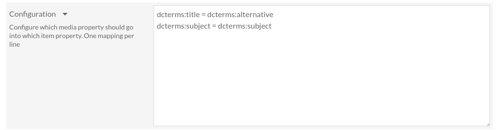

Configuration
La configuration est accessible depuis la page de configuration du module. Connectez-vous à l’interface d’administration, allezz sur la page « Modules », trouvez OaiPmhRepository Media Property Mapper et cliquez sur le bouton « Configurer ».
Vous pouvez ici configurer quelles propriétés des médias seront exposées, et comment elles seront exposées. Le format de configuration est simple. C’est une liste de correspondances, une par ligne, où chaque correspondance est de la forme source = destination. source est la propriété du média et destination est la propriété dans laquelle elle sera exposée.
Par exemple, dcterms:title = dcterms:alternative signifie que le titre du média sera exposé comme un titre alternatif du contenu.